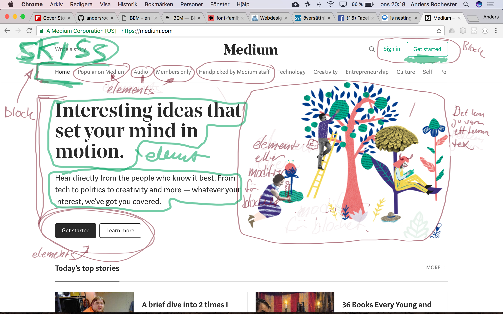

Nu är det ju så att vi ännu är ganska nybakade som utvecklare men en sak har vi upptäckt och det är hur svårt det är att namnge saker. my-app myoldapp2, .my-new-div-red, #my-old-div-green-on
BEM är en förkortning. Det är ett sätt att dela in siten i olika logiska delar så man kan hantera informationsflödet som renderas.
.menu {
// Blocket
}
.menu .menu__menu-item {
// Element, mindre del av ett menu-block
}
.menu .menu--cool-menu-item {
// Modifier, specifik variant av en menu-item
}
<!-- HTML exempel -->
<div class="block">...<div>
/* CSS exempel */
.block { color: #042; }
Ett block är en självständig enhet med sin egna betydelse vilken representerar någon del av gränssnittet på sidan. Exempel på block är sidhuvud, sidfot eller knapp. De mest självklara blocken är html-taggar men beroende på hur hur komplex sidan så består den av fler olika boxar eller en navigeringsmeny vilka alla kan vara egna block.
Element i detta sammanhang är de olika delarna av ett block. Tar vi navigeringsmenyn som exempel är de olika knapparna i menyn element av blocket menyn. När vi namnger en klass till ett element använder vi oss av blockets klassnamn med elementnamnet som suffix och binder i hop det med dubbla understreck.
<!-- HTML exempel -->
<div class="block">
...
<span class="block__element"><span>
</div>
/* CSS exempel */
.block { color: #042; }
.block__element { color: #042; }
Ett bra gränssnitt interagerar med användaren och beroende på olika ageranden så uppdateras sidans olka delar. Ett exempel kan vara när en knapp blir grön när man tryckt på den, eller när en box skall visas eller ej.
/* exempel på ett block vars synlighet är på eller av */
<div class="block block--visibility"> ... </div>
/* CSS */
.block--visibility { }
/* exempel modifiers på en knapp */
.button .button--success {
color: green;
}
.button .button--warning {
color: red;
}
Namngivning av klasser till modifier av block eller element görs med dubbelt tankestreck efter namnet på klassen. block--dark eller block__element--size-big
En av fördelarna med BEM är att man måste sätta sig ner innan och bygga upp strukturerna innan och bygga ett hållbart skelett som
I all utveckling, i alla projekt så tenderar det att växa. Det ligger i sakens natur och därför är det så viktigt att skalbarheten finns kvar och att man inte blir beroende av ett visst verktyg. Bygger vi sidor som skall presenteras av webläsare i någon form är vi hittills beroende av HTML och CSS i första hand. BEM ger dig en möjlighet att behålla ditt kreativa momentum.
// BEM
.button { }
.button--warning { }
.button .button__submit { }
// SCSS/LESS
.button {
.--warning { }
.__submit { }
}
// efter kompilering
.button { }
.button.--warning { }
.button.button__submit { }
// SCSS/LESS nesting /w BEM
.button {
.button--warning { }
.button__submit { }
}
// efter kompilering
.button { }
.button.button--warning { }
.button.button__submit { }
Man skall inte blanda verktyg in absurdum. Exemplet ovan visar vad som kan hända om man staplar klasser i SASS efter kompileringen får man ett annat resultat än det man väntat sig. Håll det enkelt. Block Element Modifier. KISS
{kind=link}